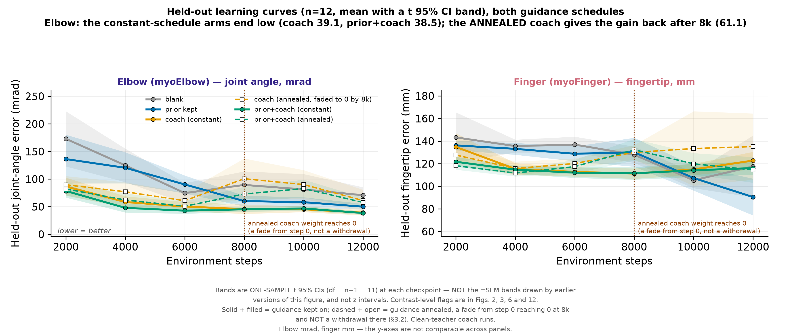
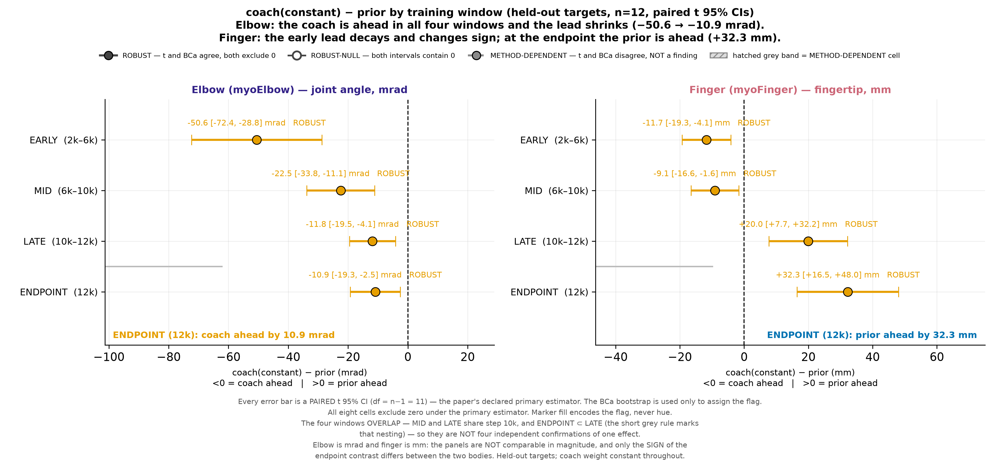
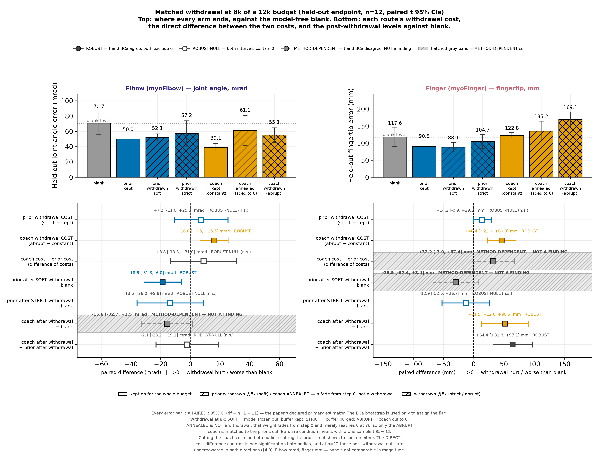

Draft · 2026 · sole author
A distilled coach leads a frozen body model early, and on myoFinger that lead reverses by the endpoint.
Mu-Hua (Maurice) Wang · National Yang Ming Chiao Tung University
Manuscript as submitted; still under revision. Not posted to any preprint server.
The whole study, no sound needed. Where a body model comes from, what the other route does instead, where the two end up, what happens when each is taken away, and where it all stops working.
Biological motor learning is far more sample-efficient than reinforcement learning, and two computational-sensorimotor traditions offer complementary explanations: the nervous system carries internal forward models of the body, and augmented guidance accelerates the acquisition phase without necessarily changing what is retained. We instantiate both under a single SAC backbone on MyoSuite musculoskeletal bodies and subject them to a matched set of controls.
With n = 12 matched seeds and paired-t 95 % intervals throughout, guidance buys the early speed; that lead decays even while the coach stays attached, and cutting the coach is separately costly. The body model's advantage over the coach arrives late — on myoFinger late enough to reverse the sign by the endpoint, though neither arm beats model-free RL there. And an actively wrong model is no substitute: a random-initialised frozen model in identical machinery loses to the babble-trained one on both bodies.

Held-out reach error against training steps; each point is a mean over 12 matched seeds, lower is better. myoElbow (1 DoF, 6 muscles): the coach stays ahead throughout, and both aids end below model-free RL. myoFinger (4 DoF, 5 muscles): the coach bottoms out at 8k and rises again while the body model keeps falling; the lines cross. The model-free baseline ends between them — on this body neither aid is shown to beat it.
A unit warning that matters throughout this page. myoElbow error is in milliradians and myoFinger error is in millimetres. The two are not comparable in magnitude, and nothing on this page compares them.
The crossover, seed by seed. Left: the distilled coach. Right: the frozen body model. Same held-out target, same start, frame for frame, over four training seeds — because a single seed can run opposite to a 12-seed mean.
Cutting the aid, matched on both routes. Rows are the route, columns are kept versus cut at 8k of a 12k budget. Both seeds lose the coach badly. The body-model row disagrees with itself — one seed worse, one better — which is exactly the shape of an interval that contains zero. The asymmetry is the finding: guidance has to stay attached to keep paying, and we cannot show the same of the model.
The control that separates content from machinery. Left: the babble-trained frozen model. Right: a random-initialised one, same Dyna loop, same budget, same seeds. Both cells of this control survive every multiplicity family we ran, on both bodies. Scored on training targets, at the endpoint only.
The same control, on the other route. Left: the distilled coach. Right: a teacher of identical architecture with random weights, in the same distillation loss at the same constant weight. A random teacher is itself a fixed non-flailing target, and it does not reproduce the coach's early gain — −19.0 mm [−24.4, −13.7] in the coach's favour on myoFinger, and −108.6 mrad on myoElbow, where an uninformative teacher is worse than no teacher at all. Scored on held-out targets.
The two random-initialised controls are not the same experiment read twice. The random model is scored on training targets and at the endpoint only; the random teacher is scored on held-out targets across all four windows. They agree in direction, and that is all that may be read from them jointly.
Every non-significant cell below is to be read as not detected at this power, never as equal. The paper enforces that rule and so does this page.
| Result | Estimate (95 % CI) | Holds on |
|---|---|---|
| A constant-weight coach leads the frozen body model early EARLY window, held-out targets. | −50.56 [−72.36, −28.76] mrad −11.7 [−19.3, −4.1] mm |
both bodies |
| Cutting the coach at 8k is costly On myoFinger the withdrawn agent ends worse than one that never had a coach. Cutting the body model is not shown to cost anything — that interval contains zero and is wide enough to contain the study's own headline effect, so it bounds nothing. | +16.0 mrad +46.4 mm |
both bodies |
| The lead decays, and on myoFinger reverses by the endpoint Carried by the last 2k of a 12k budget, and not a verified asymptote. Survives four of six multiplicity families; fails the strictest, and the paper prints it failing. | interaction +38.7 / +31.7 endpoint +32.3 [+16.5, +48.1] mm |
finger only |
| An actively wrong aid does not substitute for a right one — on either route A random-initialised model loses to the babble-trained one on both bodies. A random-initialised teacher in the identical distillation loss does not reproduce the coach's early gain, and is worse than no teacher at all on myoElbow (+49.6 [+23.4, +75.8] mrad). | model −49.3 / −40.8 teacher −108.6 / −19.0 |
survives every correction family |
| Freezing the model, which the title commits to, is not detected to change anything Tested on its own body at 12 matched seeds. The interval is narrow against that arm's own −25.5 mrad effect over model-free RL — which is what makes this null informative rather than merely underpowered. | +0.68 [−2.64, +4.01] mrad | tight null |
| An aid still attached compresses seed-to-seed spread | 3 of 4 cells on SD 2 of 4 on scale-free CV |
post hoc |
| Body | Joints | Muscles | Budget | Result |
|---|---|---|---|---|
| myoElbow | 1 | 6 | 12,000 | Both aids beat model-free RL at the endpoint |
| myoFinger | 4 | 5 | 12,000 | No condition beats model-free RL; the two routes still separate |
| myoHand | 23 | 39 | 60,000 | No improvement detected on either arm |
| myoArm | — | 34 | 10,000 | Single seed, truncated; carries no claim |
The paper opens by noting that muscle-actuated bodies can need hundreds of millions of environment steps. It trains for twelve thousand. Whether the larger bodies fail because the method does not scale, or because the budget does not, is a question these data cannot separate — and the paper says so rather than reporting the two small bodies alone.
One SAC backbone, 12,000 environment steps, 12 matched seeds per condition, and held-out target sets disjoint from the training targets. The body model is an MLP forward model learned once from task-agnostic, reward-free motor babbling, then frozen and used for short-horizon Dyna rollouts. The coach is a frozen teacher policy supplying an auxiliary distillation loss.
Six controls make the two routes comparable: a random-initialised frozen model in identical machinery, clean-teacher retraining, a non-annealed constant-weight coach, a strict body-model withdrawal with the imagined-transition buffer purged, an abrupt-cut coach matched to that withdrawal, and the combined arm under the constant schedule.

The crossover on myoFinger, across the four evaluation windows.

The matched withdrawal. Each aid cut at a common training step.
Across 25 matched conditions on two bodies. Seven of the ten condition types exist only to remove a confound from the other three — a random-model twin, a constant-weight coach, matched withdrawals, and teachers retrained without a body prior in the loop.
The babble data is task-agnostic and reward-free — uniform random muscle activation, recorded before any task exists. 200,000 transitions on myoFinger, 300,000 on myoHand.
Rebuilt from the raw per-seed files, bypassing the statistics tables entirely. All matched. Four archived results were re-derived end to end; two returned bit-identical, including one arm whose launcher was never archived.
All 29 references resolved; the 27 whose full text we could obtain were read against what we claimed they said. One was credited with a mechanism its own abstract disowns; one was cited for a claim its text defines in the opposite direction.
Five claims were withdrawn in the course of this, in every case after the control that tested them was run. Multiplicity is reported over six family definitions, including the strictest one — the only one the headline result fails. The paper also keeps a body that disagrees with it (myoHand), a checkpoint with no archived build record, and a condition list with no launcher script.